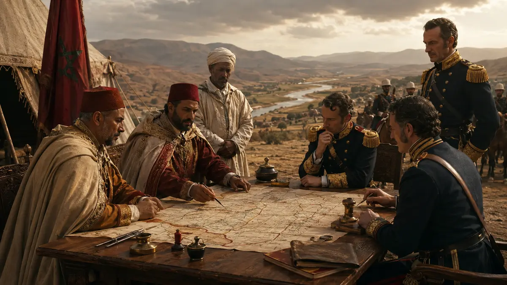
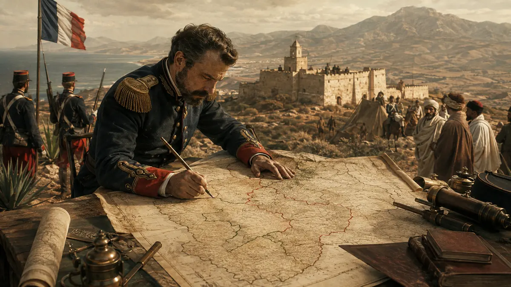
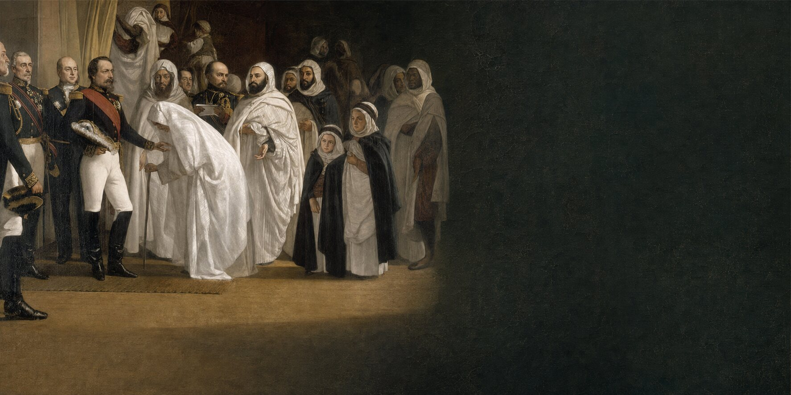
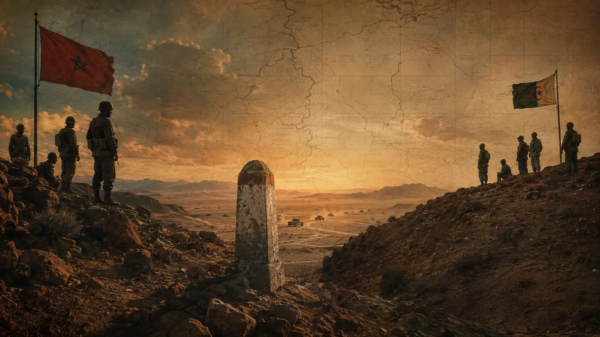
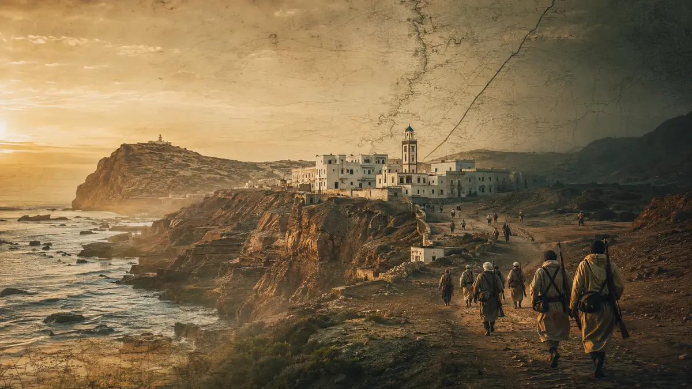
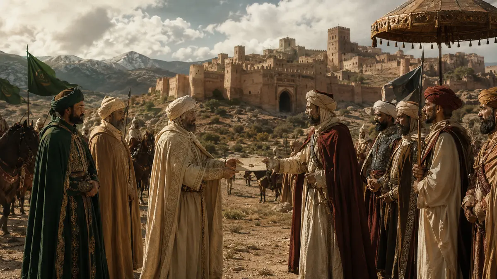

المرابطون ملوك المغرب: المجال الجغرافي والأصل القبلي والهوية السياسية
دراسة موثقة في الأصل الصنهاجي للمرابطين ومجالهم الجغرافي وهويتهم السياسية.
قراءة البحثاكتشف الأبحاث والدراسات والوثائق الأرشيفية والمراجع المتعلقة بتاريخ المغرب ومجاله السياسي والدبلوماسي.
عشرة ملفات تاريخية موثقة، مرتبة لتسهيل القراءة والاكتشاف.
دراسة موثقة في الأصل الصنهاجي للمرابطين ومجالهم الجغرافي وهويتهم السياسية.
قراءة البحثعرض موثق لمعاهدات المغرب وبريطانيا وأبعادها الدبلوماسية والتجارية والسيادية.
قراءة الوثيقة
ملف يوثق تطور مسألة الحدود المغربية عبر المراسلات الرسمية والنصوص الاتفاقية.
قراءة البحثوثيقة أرشيفية فرنسية لدراسة المجال المغربي التاريخي وإثباتات السيادة.
قراءة الوثيقة
قراءة في تشكل الكيان الجزائري الحديث وصلته بالإرث الاستعماري وترسيم الحدود.
قراءة البحث
إعادة قراءة شخصية عبد القادر وعلاقته المعقدة بفرنسا في ضوء النصوص التاريخية.
قراءة البحث
ملف وثائقي حول حرب الرمال من خلال الوثائق والشهادات المرتبطة بالحدود والسيادة.
قراءة البحث
ترجمة ولد صنهاجة لدراسة إسبانية موثقة، مع حواشي المؤلف ومراجعه حول المعارك والنتائج بين 1957 و1975.
قراءة الدراسة
بحث في العلاقات السياسية بين الزيريين والحماديين ومفاهيم التبعية والسيادة.
قراءة البحثدراسة موجزة في دور شارل ديغول خلال أواخر الحقبة الاستعمارية.
قراءة البحث